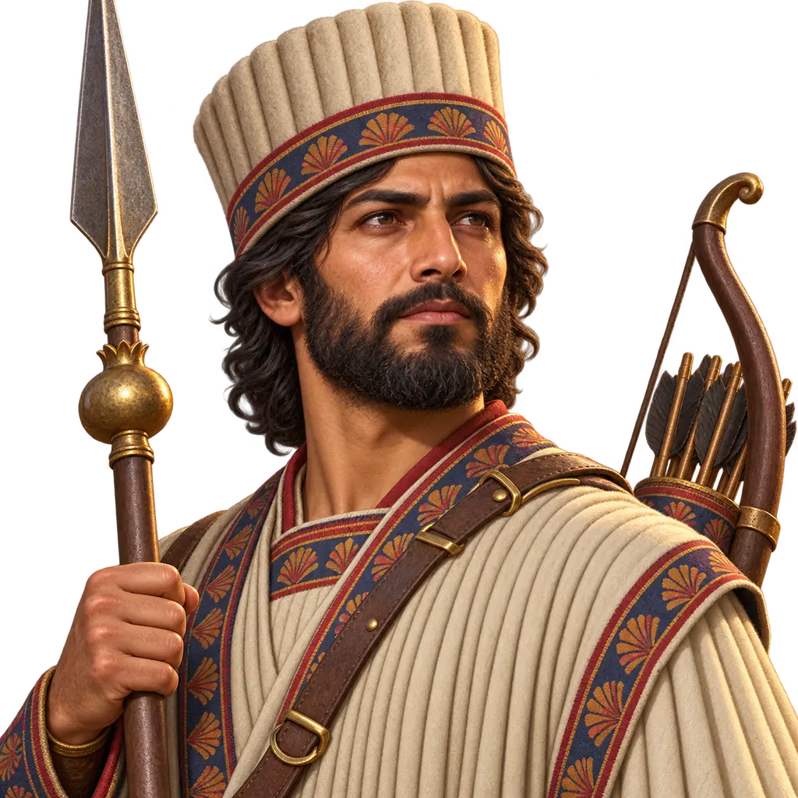
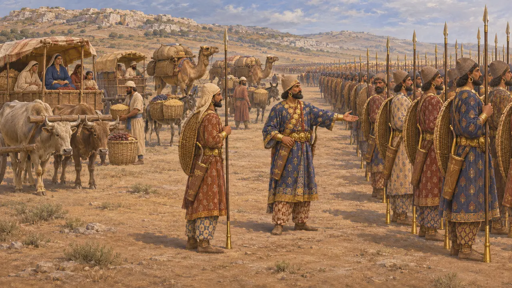
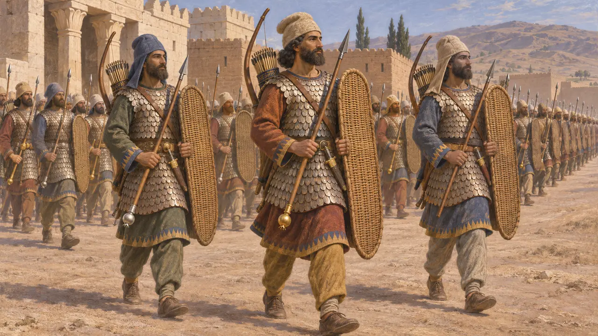
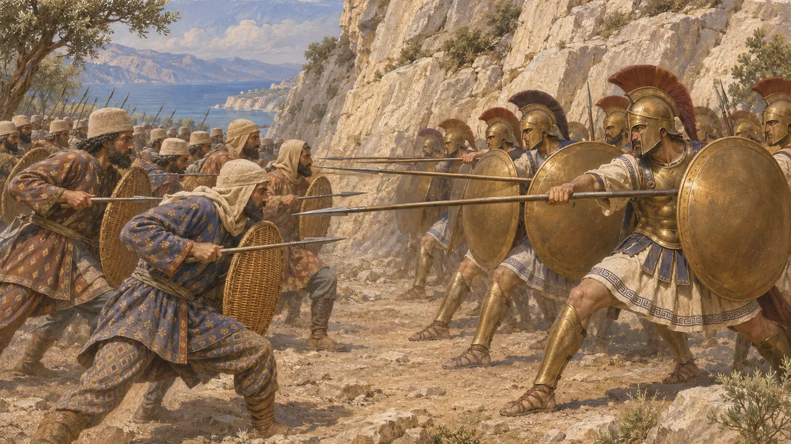
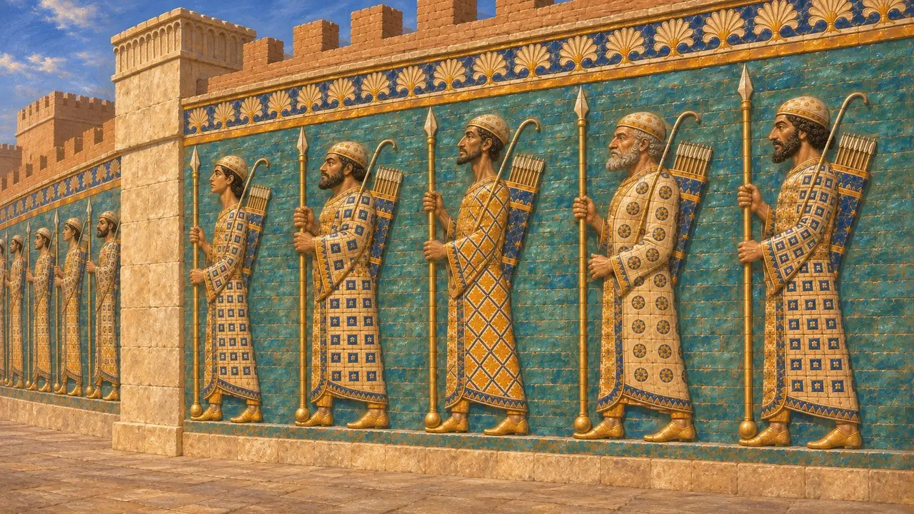
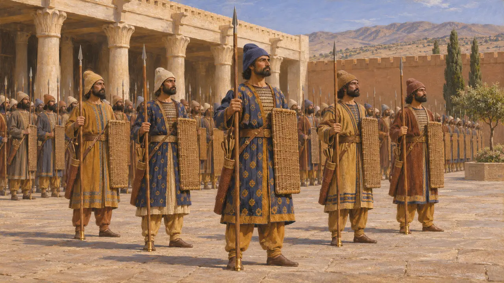

Энциклопедия › Воины и корабли

Бессмертный
Отборная персидская пехота в десять тысяч воинов, как её описывает Геродот, 480 г. до н. э.
В игре: Уровень 10: Жаркие Ворота
Бессмертные — отряд из десяти тысяч отборных персидских пехотинцев. Геродот описывает их в войске Ксеркса в 480 году до н. э. под началом Гидарна. Это самый известный отряд царского войска, но почти все сведения о них, включая само название, восходят к греческим авторам, а не к персидским документам.
В игре: Когда Бессмертный погибает, казармы сами ставят в очередь и оплачивают замену ему — в согласии с тем, как Геродот объясняет само это название. То, что в игре это тяжёлые щитоносцы, — упрощение по сравнению с Геродотом: у него они вооружены копьём, луком и плетёным щитом.

Геродотовы десять тысяч
Античное свидетельствоГеродот пишет, что Бессмертные были отборными персами под началом Гидарна, сына Гидарна. Название он объясняет их неизменной численностью: если кто-то умирал или заболевал, на его место выбирали другого, так что отряд всегда насчитывал десять тысяч человек. Он добавляет, что они превосходили остальное войско золотыми украшениями, что их женщин и слуг везли в повозках, а собственное продовольствие для них доставляли верблюды и вьючные животные.
Herodotus 7.83

Вооружение и облачение
Античное свидетельствоПо Геродоту, снаряжение Бессмертных было таким же, как у прочей персидской пехоты. Они носили мягкие войлочные шапки, туники с рукавами и чешуйчатые доспехи, похожие на рыбью чешую, а при себе имели плетёные щиты, короткие копья, большие луки с тростниковыми стрелами и кинжалы. В шествии Ксеркса тысяча копейщиков рядом с Царём несла на нижних концах копий золотые яблоки. За ними шли десять тысяч пехотинцев: тысяча — с золотыми гранатами, девять тысяч — с серебряными.
Herodotus 7.61; Herodotus 7.83; Herodotus 7.41

Фермопилы и что было дальше
Античное свидетельствоГеродот пишет, что Ксеркс послал Бессмертных на проход у Фермопил после неудачи мидян и киссийцев и что те преуспели не больше, потому что их копья были короче греческих. Затем Гидарн, которого вёл Эфиальт, ночью провёл их горной тропой и вышел в тыл защитникам. После Саламина, по словам Геродота, Мардоний оставил Бессмертных в Греции, хотя Гидарн предпочёл остаться при Царе.
Herodotus 7.210-211; Herodotus 7.213-218; Herodotus 8.113

Стражи в кирпиче и камне
Свидетельства эпохиПанно из глазурованного кирпича из дворца Дария в Сузах изображают длинные ряды стражей в одеяниях, с копьями с круглыми подтоками, с луками и колчанами. Похожие копейщики есть на рельефах Персеполя. Эти изображения часто связывают с Бессмертными или с царскими копьеносцами, но ни один персидский текст их не подписывает, так что такое отождествление — современная интерпретация.
Susa glazed-brick friezes, Louvre; E. Schmidt, Persepolis I, 1953

Что означало имя
СпорныйНи один персидский источник не употребляет названия «Бессмертные». Некоторые историки предполагают, что греки спутали древнеперсидское слово со значением «спутники» или «сопровождающие» с похожим словом «бессмертные»; другие это отвергают. Учёные расходятся и в том, как десять тысяч соотносились с тысячей царских копьеносцев, и в том, была ли это постоянная гвардия или условное число, которым Геродот обозначал лучшие войска Царя.
M. Charles, Immortals and Apple Bearers, Classical Quarterly, 2011; P. Briant, From Cyrus to Alexander, 2002
Источники
- Herodotus 7.83
- Herodotus 7.41; 7.61
- Herodotus 7.210-218; 8.113
- P. Briant, From Cyrus to Alexander, 2002
- M. Charles, Immortals and Apple Bearers, Classical Quarterly, 2011
- E. Schmidt, Persepolis I, 1953